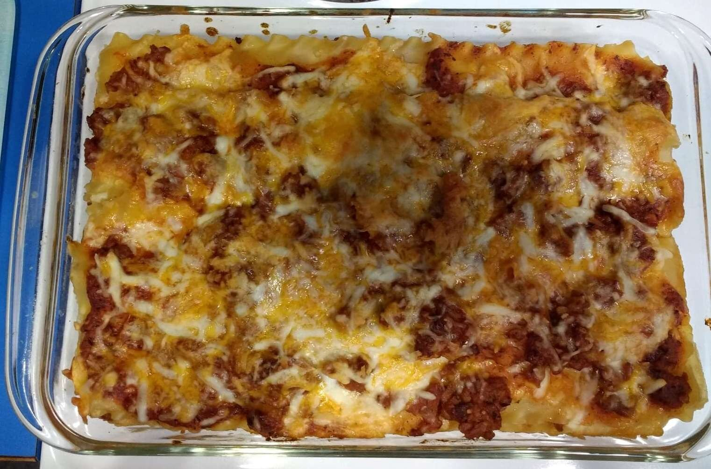

...back to main
Lasagna

Description
This is a faster, and less expensive lasagna.
- Prep: 30 mins
- Cook: 30 mins
- Total: 1 hr
- Servings: 8
- Yield: 1 9x13 inch pan
Ingredients
- 1 (16 ounce) package of lasagna noodles
- 1 pound lean ground beef
- salt and pepper to taste
- 1 (16 ounce) jar spaghetti sauce
- 1 clove garlic, minced
- 1/2 pound shredded mozzarella cheese
- 1/2 pound shredded Cheddar cheese
- 1 pint ricotta cheese
Directions
- Bring a large pot of lightly salted water to a boil. Add pasta and cook for 8 to 10 minutes or until al dente: drain.
- Preheat oven to 350 degrees F (175 degrees C). In a large skillet over medium-high heat, brown and season with salt and pepper; drain. Stir in spaghetti sauce and garlic and simmer 5 minutes.
- In a medium bowl, combine mozzarella, Cheddar and ricotta; stir well. In 9x13 inch pan, alternate layers of noodles, meat mixture and cheese mixture until pan is filled.
- Bake in preheated oven for 30 minutes, or until cheese is melted and bubbly.